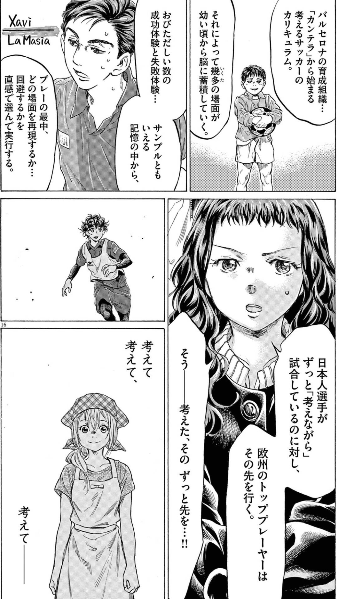
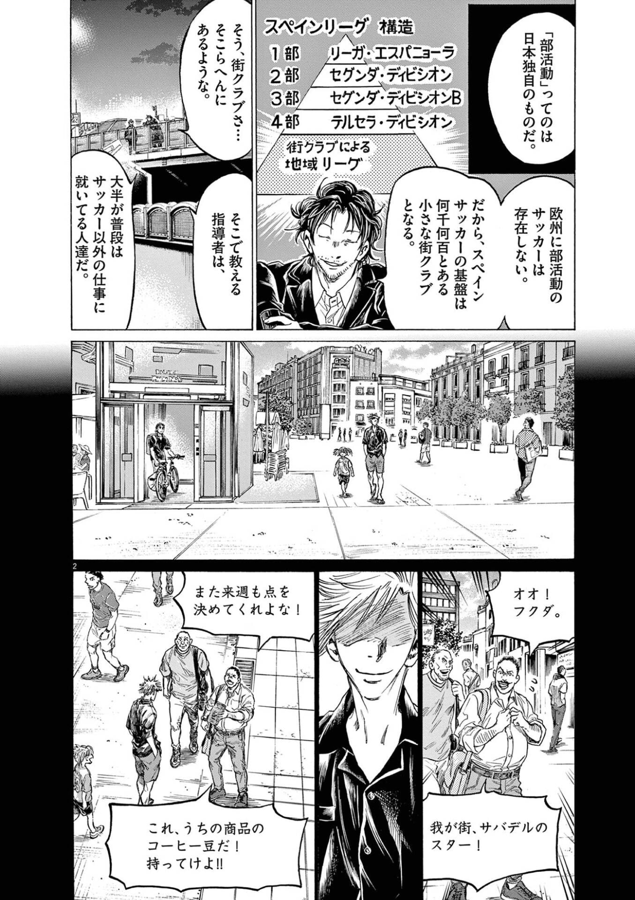
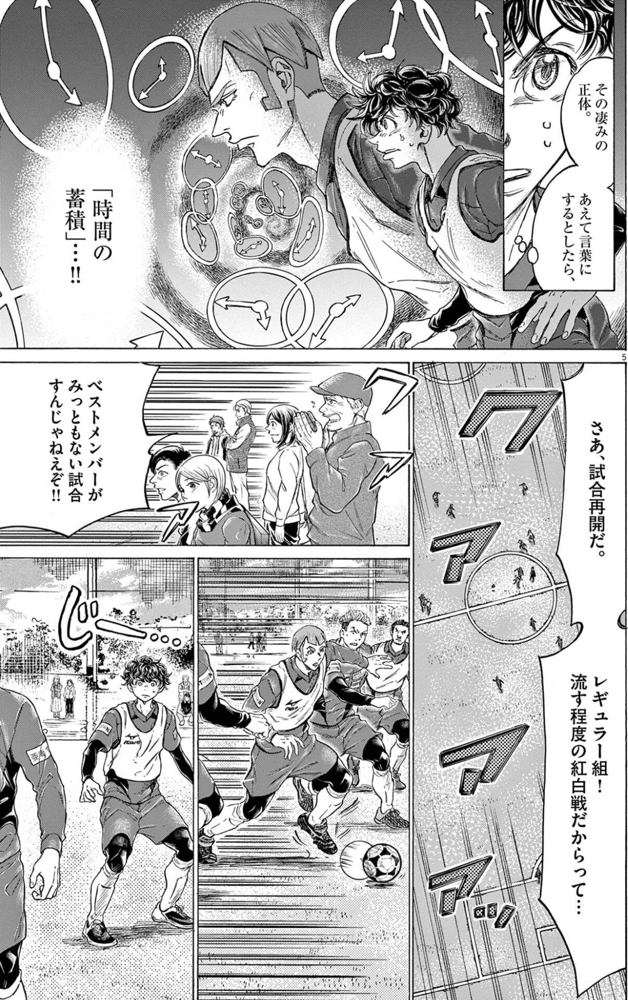
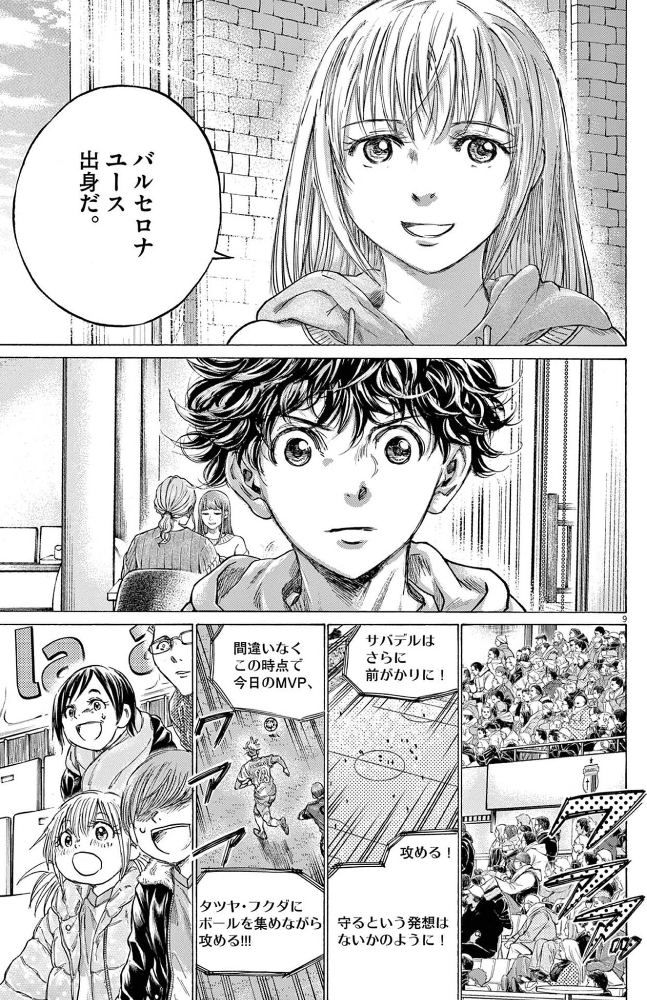
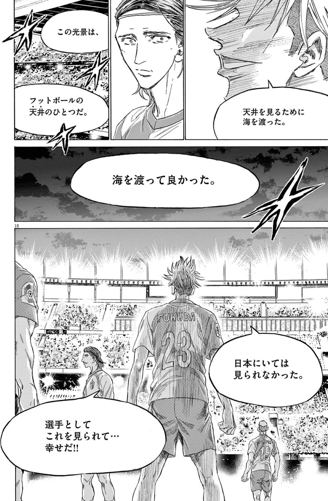
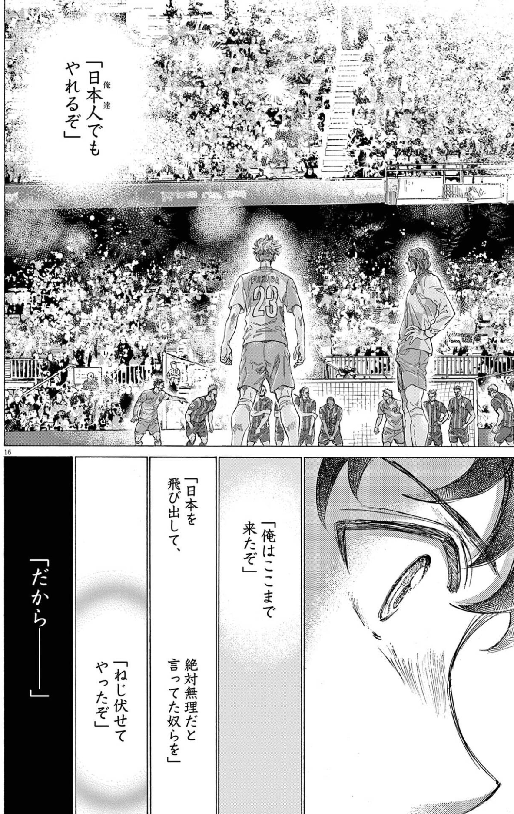

読書ログ #7 —— アオアシ × 銃・病原菌・鉄 × ディスタンクシオン
強さは、才能ではなく、環境と蓄積の産物なのかもしれない。
1. なぜ、育つ環境はこんなにも違うのか
アオアシの後半、舞台はスペインへ移る。そこでアシトが突きつけられるのは、技術の差ではない。そもそも、育ってきた環境がまるで違う、という事実だ。

バルセロナの育成組織で、幼い頃から成功と失敗を浴びてきた選手たち。日本人選手が必死に「考えて、考えて」いるあいだに、欧州のトッププレーヤーは、もうその先にいる。これは、頭の良さの差なのだろうか。それとも——。
今回は、この「環境の差」を、二冊と並べて視たい。ジャレド・ダイアモンド『銃・病原菌・鉄』と、ふたたびブルデュー『ディスタンクシオン』。
2. 銃・病原菌・鉄：強さは、環境が決めた
ダイアモンドの『銃・病原菌・鉄』は、ひとつの大きな問いに答える本だ。なぜ、ある大陸の人々が、別の大陸の人々を征服する側になったのか。
答えは、人種の優劣ではない。環境と地理だ。栽培に適した植物、家畜にできる動物、東西に長い大陸——たまたま恵まれた環境にいた人々が、農耕で余剰を生み、人口を増やし、技術と免疫と国家を蓄積していった。差は、能力ではなく、スタート地点に置かれていた条件から生まれた。
サッカーも、似ている。スペインの選手が強いのは、生まれつき足が速いからではない。サッカーが文化として根づいた環境に、たまたま生まれ落ちたからだ。「人を責める前に、構造を見ろ」——この本の射程は、ピッチの上にもまっすぐ届く。
3. サッカーピラミッドという、時間の蓄積
スペインのリーグ構造を見ると、それがよく分かる。

1部から、7部まで。小さな街にもクラブがあり、サッカーが生活に溶けている。この層の厚さは、一朝一夕にはできない。何世代もの時間が、降り積もってできたものだ。
アオアシは、それをこう名づける。

「時間の蓄積」。これは、ただ「歴史が長い」という話ではない。社会まるごとが、サッカーにどれだけの熱を注いできたか——その総量の蓄積だ。スペインには、仕事よりも、地元クラブのコーチングを優先することが許される空気がある。平日の夕方、街の小さなピッチに、当たり前のように大人と子どもが集まる。その日々の熱が、何世代も降り積もって、あの分厚いピラミッドになった。日本とスペインの差は、才能の差ではない。社会が、サッカーに賭けてきた熱の——量の差だ。ダイアモンドの言う「環境が生んだ蓄積」は、サッカーの世界では、この熱量とピラミッドの形をとっている。
4. 環境は、前提そのものを変える
環境の怖いところは、「何を考えるか」だけでなく、「何を考えないで済むか」まで変えてしまうことだ。

バルセロナのユース出身者には、「守るという発想がない」かのように見える、という。攻めるのが当たり前。それ以外を、そもそも考えない。
これは、ブルデューの言うハビトゥス——環境が体に刻みこんだ、無意識の「当たり前」——に近い。スペインの選手は、攻撃を「選んで」いるのではない。攻撃する身体に、環境が育てあげている。日本人選手が頭で「考えて」追いつこうとするものを、彼らは考える前に、もう体が知っている。
環境は、意識の下に染みこむ。だから、いちばん追いつきにくい。
5. 蓄積が、経歴を担保する
ここで、#5 で視た『ディスタンクシオン』を、もう一度。
美意識も、見る目も、階級と履歴で作られる——あの話は、選手の「経歴」にもそのまま効く。スペインの選手は、生まれた環境という文化資本を、最初から持っている。日本人選手は、それを後から、意識的に積み上げるしかない。
そして #5 で視たとおり、評価する側の眼差しも中立ではない。「欧州出身」という経歴は、それだけで、ある種の信頼を担保してしまう。蓄積された環境が、経歴を担保し、経歴が、見る目を曇らせる。実力以前の、構造の力だ。
だからアシトの戦いは、二重に重い。環境の差を埋めながら、その差ゆえに曇った眼差しも、こじ開けなければならない。#5 の「見出されないなら、見させる」が、ここでも効いてくる。
6. それでも、海を渡る個
ただ——ダイアモンドの本を、宿命論として読んではいけない。環境が条件を決めるのは確かだ。けれど、人は、自分の環境を選び直すことができる。

福田は、フットボールの天井を見るために、海を渡った。日本にいては見られなかった景色。それを見るために、自分から環境を移した。生まれた環境は選べなくても、次に立つ環境は、選べる。
そして、選び直した先で、こうやって言い切る者がいる。

「日本人でもやれるぜ」。絶対無理だと言われつづけた環境の差を、結果でねじ伏せる。環境は強い。でも、環境がすべてではない。条件を引き受けたうえで、それでも超えにいく個が、環境の物語に穴を開ける。
7. 環境は、設計できる
ダイアモンドの本の、いちばん希望のある含意は、ここだと思う。強さが環境の産物なら、環境のほうを設計できる。
スペインのピラミッドが何世代もかけてできたなら、育つ環境は、意図して作ることもできるはずだ。アオアシのエスペリオンが描こうとしているのも、たぶんそれだ——たまたまの才能を待つのではなく、才能が育つ環境そのものを、設計する。
#6 で視た「育てる熱」は、個人の営みだった。#7 で視ているのは、その熱が積み重なって、やがて環境になるという話だ。一人の指導者の熱が、ピラミッドの一段になる。時間の蓄積とは、そうやって作られていく。
8. 観測と、環境
最後に、OrbitLens に繋げたい。
観測のいちばん危ういところは、強さを、個人だけに帰属させてしまうことだ。「この人は優秀だ／低い」というスコアは、その人が置かれた環境を、たいてい無視する。恵まれた環境で積んだ蓄積も、痩せた環境で独りで耐えた粘りも、同じ「個人のスコア」に丸められてしまう。
これは、#5 の無意識の差別と地続きだ。環境の差を見ずに個を測ると、環境格差を、才能格差と読み違える。スペイン出身というだけで高く、日本出身というだけで低く——そんな観測は、構造をそのまま温存する。
だから EIS は、ドメインを分けて観る。混ぜない。同じ環境のなかでの相対と、組織を超えた絶対を、分けて持つ。そして、時間の蓄積（生き残ったコード）を、その人の文脈ごと観ようとする。強さを個人に押しつける前に、どんな環境が、それを可能にしたのかを問う。観測は、環境を見落とした瞬間に、差別の装置になる。
強さは、環境と蓄積の産物だ。だから、個を測る前に、環境を視る。そして、より良い環境のほうを、設計する。
生まれた環境は選べない。けれど、次に立つ環境と、誰かのために作る環境は、選べる。
取り上げた本
次回予告
次回 #8 も、アオアシ。スペインの名門クラブ——その伝統と矜持が、いつ「本質を見失った王国」へと傾くのか。勝つことが目的化したとき、無限ゲームだった文化は、有限ゲームに飲まれる。ジェームス・カース『Finite and Infinite Games』と、ベネディクト・アンダーソン『想像の共同体』と並べて読む。
本記事は小林有吾『アオアシ』、ジャレド・ダイアモンド『銃・病原菌・鉄』、およびピエール・ブルデュー『ディスタンクシオン』への個人的な考察です。
OrbitLens / machuz